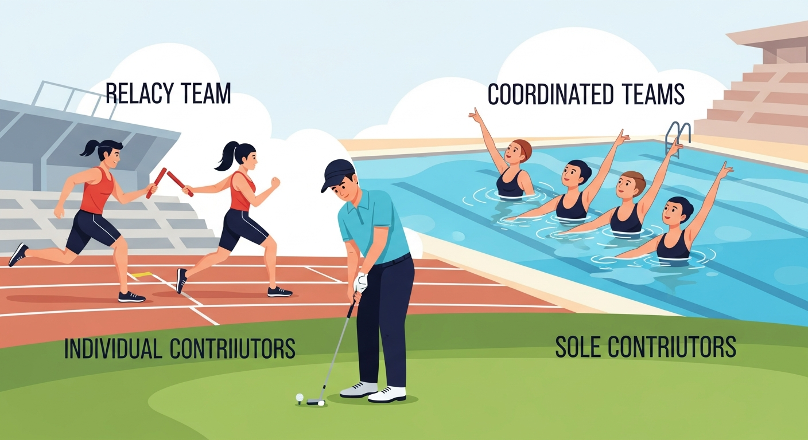

Vibe coding enables teams to explore and test different collaboration patterns before committing to new structures. Prototype how PMs, designers, and engineers would work together with vibe coding practices, test eval-driven workflows, and experience how different team topologies affect iteration speed. Vibe coding team workflows helps organizations discover the collaboration patterns that actually work for their context rather than adopting generic frameworks that may not fit.
Objective: Design team structures and collaboration patterns that support AI-native product development.
Chapter Overview
This chapter covers team topologies for AI products, including cross-functional structures, platform teams, central AI enablement, collaboration patterns, and AI review boards. Includes case studies from HealthMetrics and DataForge, plus org chart templates for different maturity stages.
Four Questions This Chapter Answers
- What are we trying to learn? How to organize teams to support AI-native product development with appropriate collaboration patterns and clear responsibilities.
- What is the fastest prototype that could teach it? Mapping your current team structure against AI-native collaboration requirements to identify gaps and barriers.
- What would count as success or failure? Team structures that enable rapid AI iteration without sacrificing quality, governance, or collaboration.
- What engineering consequence follows from the result? Traditional team structures often impede AI product development; topology choices directly impact AI product success.
Learning Objectives
- Design AI-native cross-functional team structures
- Apply Team Topologies patterns to AI organizations
- Build central AI enablement capabilities
- Establish effective collaboration patterns for PM/Design/Engineering
- Implement AI review boards without bureaucracy
Sections in This Chapter
Cross-References
- Chapter 25: Governance and Compliance - Foundational governance frameworks that AI Review Boards operationalize
- Chapter 29: Building the AI Product Organization - Organizational structures at scale, career paths, and hiring
- Chapter 21: Evaluation as a Development Discipline - Eval frameworks that enable cross-functional collaboration
- Chapter 10: Collaborative Discovery - Discovery phase collaboration patterns